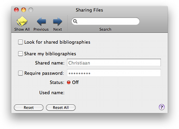

Sharing Sharing
Sharing SharingUsing the Sharing preference pane you can make Bibdesk share your bibliographies with others via Bonjour or look for bibliographies other people share on your network. If you have enabled the system's built-in firewall, you may have to configure it to allow sharing by BibDesk.

Look for shared bibliographies: Selecting makes BibDesk look for shared bibliographies on your network.
Share my bibliographies: Selecting this will share your open bibliographies with other Bibdesk applications on your network.
Shared name: This is the name that others will see when they look for your shared bibliographies.
Require password: Selecting this will require others to authenticate themselves with this sharing password. The password is stored in your keychain, and is never transmitted in clear text.